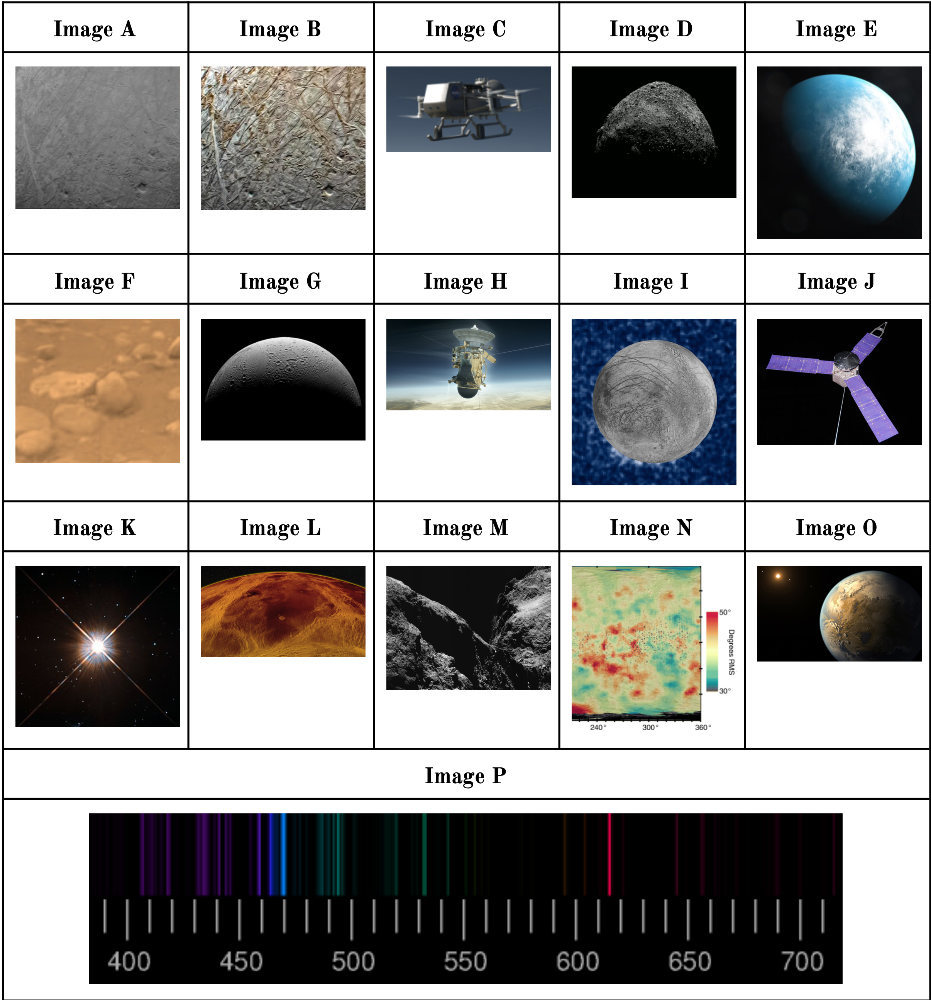
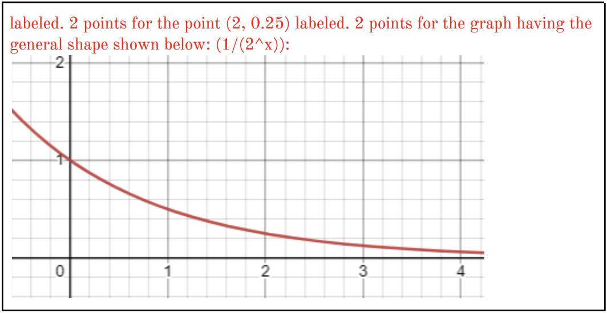
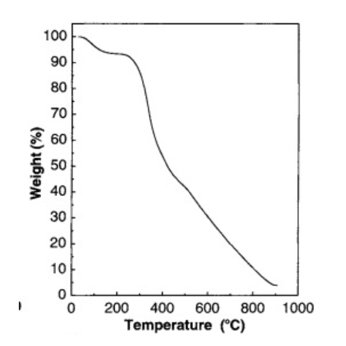
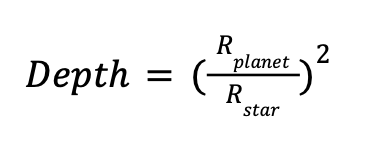

1. Which of the following is closest to the thickness of the crust of Enceladus?
a. ~0.01 km
b. ~0.1 km
c. ~1 km
d. ~10 km
e. None of the above
Answer: D (~10 km)
Enceladus has an ice crust approximately 10-20 km thick overlying its subsurface ocean.
🔬 Planetary Scientist Deep Dive
Enceladus Ice Shell Structure
The thickness of Enceladus's ice crust has been determined through multiple lines of evidence:
Gravity measurements: Cassini's gravity data revealed the moon's internal structure
Libration analysis: The way Enceladus wobbles in its orbit indicates a decoupled ice shell
Topographic analysis: Surface features suggest a relatively thin, flexible crust
Regional Variations
The ice shell thickness varies significantly:
South polar region: As thin as 1-5 km near the tiger stripes
Equatorial regions: Up to 20-25 km thick
Average thickness: Approximately 10-15 km globally
Implications for Habitability
The relatively thin crust is crucial for:
Heat transfer: Allows tidal heating to maintain liquid ocean
Chemical exchange: Enables ocean-surface material exchange through cracks
Plume activity: Thin regions allow subsurface water to reach the surface
References: Thomas et al. (2016) "Enceladus's measured physical libration"; Hemingway & Mittal (2019) "Enceladus's ice shell structure"
2. How many amino acids are common to most of life?
a. 20
b. 30
c. 10
d. 5
e. 2
Answer: A (20)
There are 20 standard amino acids that are commonly used by most life forms to build proteins.
🔬 Planetary Scientist Deep Dive
The Universal Genetic Code
The 20 standard amino acids represent one of biology's most fundamental universals:
Essential amino acids: 9 cannot be synthesized by humans and must be obtained from diet
Non-essential amino acids: 11 can be synthesized by the human body
Genetic code: 64 possible codons encode these 20 amino acids plus stop signals
Astrobiology Significance
Biosignatures: Detection of these amino acids could indicate life
Chirality: Life preferentially uses left-handed amino acids
Meteorite discoveries: Over 80 amino acids found in carbonaceous chondrites
Prebiotic synthesis: Miller-Urey experiments produced several of these amino acids
Beyond the Standard 20
Selenocysteine: The "21st amino acid" in some proteins
Pyrrolysine: The "22nd amino acid" found in some archaea
Modified amino acids: Post-translational modifications create hundreds of variants
References: Kvenvolden et al. (1970) "Evidence for extraterrestrial amino-acids"; Cleaves (2010) "The origin of the twenty amino acids"
3. Which of the following is used to power the radioisotope power supply of the spacecraft in Image C?
📸 Referenced Image:
a. U-235
b. Pu-238
c. U-238
d. Pu-230
e. Kr-220
Answer: B (Pu-238)
Plutonium-238 is the standard radioisotope used in RTGs (Radioisotope Thermoelectric Generators) for deep space missions like the spacecraft shown in Image C.
🔬 Planetary Scientist Deep Dive
Why Plutonium-238?
Pu-238 is ideal for space missions because:
Half-life: 87.7 years provides decades of reliable power
Alpha decay: Produces heat without dangerous gamma radiation
High power density: 0.57 watts per gram of thermal power
Stable output: Predictable power decline over mission lifetime
RTG Technology
Thermoelectric conversion: Heat converted to electricity via Seebeck effect
Efficiency: Typically 6-7% thermal to electrical conversion
Reliability: No moving parts, works in any orientation
Longevity: Voyager RTGs still operating after 45+ years
Mission Applications
RTGs have powered numerous missions:
Outer planet missions: Voyager, Galileo, Cassini, New Horizons
Mars rovers: Curiosity, Perseverance
Future missions: Dragonfly to Titan, Europa Clipper
References: Bennett (2019) "Radioisotope Power Systems"; NASA (2013) "Multi-Mission Radioisotope Thermoelectric Generator"
4. In the Drake equation, the variable fi represents which of the following fractions?
a. Earth sized planets with life
b. Suitable stars for life
c. Stars with planets
d. Planets with intelligent life
e. The lifetime of life
Answer: D (Planets with intelligent life)
In the Drake equation, fi represents the fraction of planets with life that develop intelligent life.
🔬 Planetary Scientist Deep Dive
The Complete Drake Equation
N = R* × fp × ne × fl × fi × fc × L
R*: Rate of star formation
fp: Fraction of stars with planets
ne: Number of habitable planets per star
fl: Fraction of habitable planets with life
fi: Fraction of life-bearing planets with intelligent life
fc: Fraction of intelligent civilizations that communicate
L: Lifetime of communicating civilizations
The Intelligence Factor
fi is one of the most uncertain parameters:
Earth example: Intelligence emerged after ~3.5 billion years of life
Convergent evolution: Intelligence evolved multiple times (primates, cetaceans, cephalopods)
Great Filter hypothesis: Intelligence might be extremely rare
Modern Estimates
Optimistic: fi ~ 0.1 (intelligence is common)
Pessimistic: fi ~ 10-9 (intelligence is extremely rare)
Current research: Studying animal cognition and AI to understand intelligence
5. High-order approximations of the Drake equation lead to which of the following conclusions?
a. The extremophile paradox
b. The nebular hypothesis
c. The Fermi paradox
d. The faint young sun paradox
e. None of the above
Answer: C (The Fermi paradox)
High estimates from the Drake equation suggest many civilizations should exist, leading to Fermi's famous question: "Where is everybody?"
6. A possible starting material for abiogenesis, a PAH is a polycyclic _:
a. amorphous hydrocarbon
b. aromatic hydrocarbon
c. agitated hydrogen
d. activated hydrocarbon
e. hydrocarbon
Answer: B (aromatic hydrocarbon)
PAH stands for Polycyclic Aromatic Hydrocarbon - complex organic molecules found throughout the universe that may be precursors to life.
7. Which of the following is the chemical formula for heavy water?
a. DO
b. H3O
c. H2O2 d. H2O
e. D2O
Answer: E (D2O)
Heavy water is deuterium oxide (D2O), where deuterium is the heavy isotope of hydrogen with one proton and one neutron.
8. Which aspect of the DAVINCI+ mission will assist with knowledge on the formation of Venus?
a. Emission spectroscopy
b. Atmospheric analysis
c. Absorption spectroscopy
d. High resolution imaging
e. None of the above
Answer: D (High resolution imaging)
DAVINCI+ will provide high-resolution imaging of Venus's surface during its descent, revealing geological features that inform us about Venus's formation and evolution.
9. Image E is an artist's rendition of a planet which was approximately how far from the Earth when discovered?
📸 Referenced Image:
a. ~100 ly
b. ~200 ly
c. ~1000 ly
d. ~800 ly
e. ~500 ly
Answer: A (~100 ly)
The exoplanet shown in Image E was discovered at approximately 100 light-years from Earth.
10. Which of the following is true about the condition of habitability/life of a planet around a red dwarf?
a. Lower possible lifetime
b. Increased productivity
c. Greater habitability
d. Greater potential for life
e. Greater instability
Answer: E (Greater instability)
Red dwarf stars are prone to stellar flares and have habitable zones very close to the star, leading to greater instability for potential life.
11. The TESS satellite is most sensitive in which of the following bands?
a. Visible light
b. NIR light
c. LWIR light
d. UV light
e. Radio light
Answer: B (NIR light)
TESS (Transiting Exoplanet Survey Satellite) is most sensitive in the near-infrared (NIR) band, optimized for detecting transits around red dwarf stars.
12. The image captured in Image F was taken by which of the following missions?
📸 Referenced Image:
a. Cassini-Huygens
b. Phoenix
c. Curiosity
d. Opportunity
e. Spitzer
Answer: A (Cassini-Huygens)
Image F shows a surface view that was captured by the Cassini-Huygens mission.
13. Proxima Centauri is known as which of the following?
a. A brown dwarf
b. A MGVCN
c. A flare star
d. A red giant
e. A YSO
Answer: C (A flare star)
Proxima Centauri is classified as a flare star, a type of red dwarf that exhibits sudden increases in brightness due to magnetic activity.
14. Imagine a comet at perihelion. If you face the direction of the gas tail from the sun and the comet moves left, the dust tail is:
a. Straight ahead
b. Slightly to the left
c. Slightly to the right
d. Facing outwards
e. None of the above
Answer: C (Slightly to the right)
The dust tail lags behind the gas tail due to radiation pressure effects, appearing slightly to the right when the comet moves left.
15. The last mission to visit Venus before the year 2000 was:
a. Mariner 10
b. Pioneer 10
c. Upwelling
d. Messenger
e. Cassini-Huygens
Answer: E (Cassini-Huygens)
Cassini-Huygens performed a Venus flyby in 1999, making it the last mission to visit Venus before 2000.
16. What feature on Mars is most directly related to the sublimation of CO2?
a. Ice formation
b. Strong winds
c. Dust storms
d. Cirrus clouds
e. All of the above
Answer: D (Cirrus clouds)
CO2 sublimation on Mars creates cirrus clouds in the atmosphere, particularly visible during seasonal changes at the polar regions.
17. What colors the atmosphere of Titan orange?
a. Methane
b. Hydrocarbon smog
c. Nitrogen smog
d. Tholins
e. Organic compounds
Answer: B (Hydrocarbon smog)
Titan's orange color comes from hydrocarbon smog created by photochemical reactions in its methane-rich atmosphere.
18. Which of the following is most true of the members of the TRAPPIST-1 system?
a. They share similar colors
b. They share similar luminosity
c. They share similar densities
d. They share similar periods
e. They are entirely different
Answer: C (They share similar densities)
The TRAPPIST-1 planets have remarkably similar densities, suggesting they formed from similar materials and processes.
19. Which of the following is not a type of asteroid in the solar system?
a. C-type
b. K-type
c. M-type
d. S-type
e. All of the above
Answer: B (K-type)
K-type is not a recognized asteroid classification. The main types are C-type (carbonaceous), S-type (silicaceous), and M-type (metallic).
20. A popular alternative proposed for carbon in building life is:
a. Potassium
b. Germanium
c. Sulfur
d. Silicon
e. Strontium
Answer: D (Silicon)
Silicon is often proposed as an alternative to carbon for life because it can form four covalent bonds and create complex molecules, though it's less versatile than carbon.
Section B: Object-Specific Knowledge
3 Questions - Variable Points - Total: 75 Points
📸 SECTION B IMAGE SET Reference these images when answering the questions below

Images A-P: Various Solar System Objects and Spacecraft
Image Viewer
Click on an image reference button to view images here.
1. Refer to Image A and Image B at the start of the following section. (33 points total)
📸 Referenced Images:
(a) What body is depicted in both images? (1 pt)
(b) Name the general features that dominate the surface of this object (as seen in the image). What are they composed of? (2 pts)
(c) Describe how the previously named features were formed on the surface of this body. (2 pts)
(d) How does the existence of such features indicate habitability on this body? Describe the relationship between this feature and how it implies the existence of other possible features on the body. (3 pts)
(e) Describe the layers that compose this object. (4 pts)
(f) Which spacecraft took images A and B (1 pt), and in what year (1 pt)? What image on the image sheet displays this spacecraft? (1 pt)
(g) What is the difference between the two images? (2 pts) Are they images of the same landscape? (1 pt)
(h) What instrument on the spacecraft likely took the images? (1 pt) Describe why that instrument is the most appropriate for this image out of all the instruments on the spacecraft. (2 pts)
(i) How does this object receive thermal energy? Describe any source(s) in detail. (4 pts)
(j) What other image on the image sheet displays this object? (1 pt)
(k) What feature is being displayed in this image? (Hint: Look towards the edges) (2 pts)
(l) What is the primary chemical composition of this feature? (2 pts)
(m) What is the significance of proving the existence of this feature, in terms of habitability? (3 pts)
Answers:
(a) Europa
(b) Lineae, which are composed of water ice
(c) The features were formed by eruptions of warm ice
(d) The lineae indicate habitability since they imply the existence of a sub-surface water ocean through water-ice eruptions
(e) Europa has an iron core, a rocky mantle, and an ocean of salty water, under a thin shell of ice on the surface
(f) Juno in 2022. Image J
(g) Image B is a higher contrast version of Image A. Yes, they are images of the same landscape
(h) Junocam, most appropriate as it is the only visible imager on the spacecraft
(i) This object receives thermal energy from tidal heating and from the radioactive decay of elements within the body
(j) Image I
(k) Plumes
(l) Water ice
(m) Proving the existence of plumes implies that a water ocean exists under the surface, which would improve the habitability of Europa significantly
Europa is one of the most promising locations for potential life in our Solar System due to its subsurface ocean and active geology.
🔬 Planetary Scientist Deep Dive
Europa's Lineae: Windows to the Ocean
Europa's distinctive linear features (lineae) are among the most fascinating geological structures in the Solar System:
Formation mechanism: Tidal flexing creates cracks in the ice shell
Warm ice eruptions: Subsurface water or warm ice erupts through cracks
Resurfacing: Continuous geological activity keeps the surface young (~40-90 million years)
Internal Structure and Tidal Heating
Iron core: ~660 km radius, similar to Earth's Moon
Rocky mantle: Silicate layer surrounding the core
Subsurface ocean: 60-150 km deep, containing more water than all Earth's oceans
Water vapor plumes: Detected by Hubble Space Telescope
Chemical composition: Plumes contain water, oxygen, and possibly organic compounds
Direct sampling: Future missions could sample plume material without landing
Hydrothermal vents: Possible seafloor venting could support chemosynthetic life
References: Pappalardo et al. (2013) "Science potential from a Europa lander"; Sparks et al. (2016) "Probing for evidence of plumes on Europa"
2. Refer to Image D for the following questions (26 points total)
📸 Referenced Images:
(a) What object is depicted in the image? (1 pt)
(b) Name another designation for the object. (1 pt)
(c) What spacecraft and instrument took this image? (2 pts)
(d) What two instruments on this spacecraft can measure infrared thermal emissions? (2 pts)
(e) Describe the formation process of this object. (3 pts)
(f) What is the name of the effect that allowed this object to obtain its current orbit? (1 pt)
(g) Describe the process by which this effect works. (3 pts) What kinds of objects does this effect apply to? (1 pt)
(h) Where did this object likely initially form? (1 pt)
(i) What is the image from the image sheet has a similar type/composition as the object in Image D? (1 pt)
(j) What is the name of this object? (1 pt) What spacecraft has most closely observed it? (1 pt)
(k) This object has provided a great deal of insight in the processes undergone by comets. Particularly, scientists have reevaluated previous hypotheses regarding the formation of the coma. Describe the process that is now thought to decompose carbon dioxide and water ices into the coma. Include specific terminology. (4 pts)
(l) What specific compound (an amino acid), extremely relevant to abiogenesis, was found on this object? (2 pts)
(m) Describe the density of this object, compared to Earth. (2 pts)
Answers:
(a) 101955 Bennu
(b) 1999 RQ36
(c) OSIRIS-REx, MapCam
(d) The Thermal Emission Spectrometer (OTES) and the OSIRIS-REx Visible and InfraRed Spectrometer (OVIRS)
(e) A large collision with a carbon-rich asteroid broke it apart into fragments, one of the pieces being Bennu
(f) The Yarkovsky effect
(g) It works when sunlight hits an asteroid, and the asteroid re-radiates a portion of the light, causing a small thrust. It applies to small meteors and asteroids
(h) It likely formed in the asteroid belt
(i) Image M
(j) 67P/Churyumov–Gerasimenko, Rosetta
(k) Electrons from the photoionization of water molecules break down ices on the surface
(l) Glycine
(m) The density is much less than that of Earth and is less than the density of water
Bennu is a carbonaceous asteroid that has provided crucial insights into the early Solar System and the origins of life.
3. Refer to Image G for the following questions (16 points total)
📸 Referenced Images:
(a) What object is depicted in the image? (1 pt)
(b) This object is known to contribute to the rings of Saturn. What is the name of the ring section that it contributes to? (2 pts)
(c) What general region of this object does the image depict? (2 pts)
(d) Which spacecraft took the image? (1 pt)
(e) Two craters are visible towards the center of this image. What are their names? (2 pts)
(f) This object is in orbital resonance with another object with a similar orbit around Saturn. What is the name of this other body? (1 pt)
(g) What process enables this object to receive the majority of its thermal energy? (1 pt)
(h) How does this resonance allow for this thermal energy to be sustained for a longer period of time? (3 pts)
(i) Evidence has been discovered on this object that may suggest hydrothermal activity. Why is the existence of hydrothermal activity relevant for the habitability of this object? (3 pts)
Answers:
(a) Enceladus
(b) Ring E
(c) The northern polar region
(d) Cassini
(e) Ali Baba and Aladdin
(f) Dione
(g) Tidal heating
(h) Dione injects orbital energy into Enceladus which is radiated by tidal forces to further heat the moon
(i) The hydrothermal activity allows for nutrients important for life to form and hydrothermal activity may support microorganisms
Enceladus is one of the most promising locations for potential life due to its active hydrothermal system and subsurface ocean.
Section C: Theory
5 Questions - Variable Points - Total: 88 Points
1. Energy Balance (27 points total)
(a) What is the "energy balance" of a planet? (2 pts) Name both sources this energy traditionally comes from. (2 pts)
(b) What is a positive, negative, and neutral energy balance? (3 pts) Which is the most suitable for a planet to be habitable? (2 pts)
(c) Categorize the following planets in terms of having a positive, negative, or neutral energy balance: Earth, Venus, and Mars. (3 pts)
(d) Imagine planet A is situated 0.5 AU from its host star. Planet B is 1 AU from the same star. What is the ratio of solar flux received at Planet A to that of Planet B? (3 pts)
(e) If the solar flux at planet B is 1200 W/m², what is the solar flux at planet A? (3 pts)
(f) Which planet has a solar flux more similar to Earth's? (1 pt) Which planet would you then guess is within the habitable zone of the star? (2 pts)
(g) Draw a rough sketch of the relation between the distance to a star and the solar flux that reaches the atmosphere. Only draw Quadrant 1. Let the y-axis represent the percentage of energy and the x-axis represent the distance (units are not required). y should equal 1 at x=0, and should equal 0.5 at x=1. Label the point at x=2. (6 pts)
Answers:
(a) The energy balance of a planet is the ratio of incoming energy to outgoing energy. The energy comes from both the host star and energy radiated by the planet itself
(b) A positive energy balance is when there is more incoming energy than outgoing energy. A negative energy balance is when there is more outgoing energy than incoming energy to the planet. A neutral energy balance is where there is an even amount of incoming and outgoing radiation. A neutral energy balance is the most suitable for a planet to be habitable
(c) All three are neutral
(d) 4 (ratio = 1/(0.5)² = 4)
(e) 4800 W/m² (1200 × 4 = 4800)
(f) Planet B has a more similar flux to Earth, and planet B is more likely within the habitable zone to the star
(g) Graph should show inverse square relationship with y=1 at x=0, y=0.5 at x=1, and y=0.25 at x=2

Energy balance is fundamental to understanding planetary habitability and climate stability.
2. Kepler's Laws (15 points total)
(a) Suppose you have a comet in orbit, in an ellipse with the Sun at one of its foci. Which law describes this shape? (1 pt) Which law describes the period of this orbit? (1 pt)
(b) What property of an orbit must be true for Kepler's second law to hold true for an orbit? (Not an orbit type, think of properties from physics) (2 pts)
(c) How many orbit types are possible in a traditional keplerian orbit? (2 pts)
(d) The total area of an ellipse can be described by the expression A=πab, where a and b describe the semi-major and semi-minor axis of the ellipse. Imagine a comet sweeps out an area of πbc/4e in a time interval t, where e is the eccentricity of the orbit. What fraction of the total period (T) of the orbit is this? (Hint: remember Kepler's second law and that e=c/a!) (5 pts)
(e) Using your answer from Part d, if the total period is 8×10⁸ s, what was the time interval t? (4 pts)
Answers:
(a) Kepler's first law. Kepler's third law
(b) Constant angular momentum
(c) 4 types
(d) ¼
(e) 2×10⁸ seconds
Kepler's laws describe the fundamental relationships governing orbital motion in gravitational systems.
3. Proteins (8 points total)
The graph below displays the relationship of protein decomposition with temperature.

(a) What is another name for this process? (1 pt)
(b) How does this process work? In particular, what component of the protein is decomposed with heat? (2 pts)
(c) What is the significance of this graph for habitability in our solar system? (1 pt) Which objects specifically exclude from harboring carbon-based life in our solar system? (2 pts)
(d) What is the most common everyday example of this process in the modern world? (2 pts)
Answers:
(a) Protein denaturing
(b) Protein denaturing destroys the hydrogen bonds that hold the protein together
(c) Life cannot form at temperatures that are too hot. Venus and Mercury are thus excluded from having carbon-based life
(d) Cooking
Protein stability sets fundamental temperature limits for carbon-based life as we know it.
4. Transits (16 points total)
Typically, a transit's "depth" is defined by the equation:

(a) What does transit depth mean? (3 pts)
(b) Why is the ratio of the radii squared? (2 pts) What physical property does it represent? (1 pt)
(c) Imagine a function, F, which takes in a time-signal f(t) and decomposes it into N components of wavelengths that combine/add to form f(t). In this case, f(t) is incoming flux as a function of time. Provide a detailed explanation of how the function could be used to aid the research of exoplanet systems. (4 pts)
(d) Suppose you are viewing a system, with P watts per meter squared of flux visible from the Earth. Over a period of 4 days, you view three consecutive dips in the flux of the star. One dip leaves the flux at x*P, the next one is y*P, and the last one is z*P, where x is greater than y which is greater than z, and all three are decimals between 0 and 1. This pattern repeats indefinitely for this system. Assuming there are two bodies other than the central star, what is the significance of x, y, and z? Describe the physical system, and each component's relation to the variables. (6 pts)
Answers:
(a) Transit depth is the ratio of the area of the planet to the area of the star
(b) The ratio is squared since the area of a circle is proportional to r squared. It represents the area
(c) It could be used to decompose a complex signal into the individual signals of each exoplanet that orbits in the system, which can determine the number of planets and their relative masses
(d) The system has two planets, x, y, and z represent the transits of the planets, with z being the transit of both planets together, y being the transit of the larger planet alone, and x being the transit of just the smallest planet
Transit photometry is one of the most successful methods for detecting and characterizing exoplanets.
5. Spectra (22 points total)
(a) Traditionally, when light passes through a gas of some medium, its behavior is defined by Kirchhoff's laws. What are the three types of gases in Kirchhoff's laws? (3 pts)
(b) Which of these types best describes the case of a planetary atmosphere? Why? (3 pts)
(c) Imagine a continuous spectrum of photons passes through a planetary atmosphere, and after performing a spectroscopic analysis on the flux received the output is visible in Image P. If the x-axis is measured in nanometers, what gas would you believe the atmosphere contains? Write both the chemical formula and common name (4 pts).
(d) Does the presence of this substance more closely imply life or habitability? (1 pt) Why or why not? (2 pts)
(e) What biological process can produce this substance? (2 pts)
(f) Does the spectral feature necessarily have to come from the planetary atmosphere? (1 pt) Why or why not? (3 pts)
(g) What type of telescope would be the best for detecting this gas in a planetary atmosphere? (Hint: Think location). (1 pt) Why? (2 pts)
📸 Referenced Images:
Answers:
(a) The gases defined are dense gases, thin and hot gases, and thin and cool gases
(b) A thin cool gas, since planetary atmospheres produce absorption lines
(c) Oxygen gas, O₂
(d) Life, since oxygen is a byproduct of chemical reactions that sustain life, and is unstable in an atmosphere by itself without a regular source to replenish it
(e) Photosynthesis
(f) No. The feature could come from interstellar gas in between the planet and the observer
(g) A space telescope, since ground-based telescopes have interference from the oxygen in the atmosphere
Spectroscopy is a powerful tool for detecting atmospheric composition and potential biosignatures on exoplanets.
Study Tips
Focus on understanding the underlying physics and planetary science concepts rather than just memorizing facts.
Pay special attention to:
Energy balance and habitability concepts
Orbital mechanics and Kepler's laws
Spectroscopy and atmospheric analysis
Astrobiology and biosignatures
Spacecraft missions and instrumentation
Planetary formation and evolution processes
This study guide covers all questions from the 2023 Sierra Vista Invitational Solar System test. Good luck with your preparation!